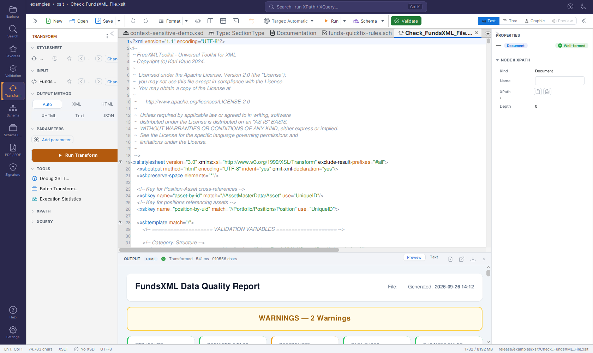

XSLT Developer¶
Version: 2.1.0
Note: The standalone XSLT Developer tab has been retired. Its capabilities now live in the Unified Shell's Transform panel (stylesheet, input, output method, parameters, XPath/XQuery) together with the advanced tools in the panel's ⋮ (overflow) menu — Debug XSLT… (the interactive debugger with breakpoints, step, variables, call stack, watch), Batch Transform…, Profile run, and Trace run. This page describes how to do XSLT and XQuery development in the shell, plus a collection of ready-to-use XSLT and XQuery patterns.
FreeXmlToolkit is a full-featured environment for creating and testing XSLT stylesheets and XQuery scripts. It includes live transformation, parameter support, batch processing, and debugging tools.
Overview¶

An XSLT stylesheet open in the editor, the Transform panel on the left with the stylesheet and input selected, and the transformation result in the OUTPUT panel below the editorXSLT/XQuery development in the Unified Shell provides:
- Full code editors for XML, XSLT, and XQuery — every file opens as a normal editor tab
- Live preview and watch modes for instant feedback while you edit
- XSLT Parameters for reusable stylesheets
- Multi-file batch processing for XSLT and XQuery
- Performance metrics, profiling, and tracing
- An interactive debugger with breakpoints, stepping, and variable inspection
- Favorites integration for quick access to stylesheets and input files
Where Everything Lives¶
| Capability | Where to find it |
|---|---|
| Edit the stylesheet / query | Open the .xsl / .xq file — it is a normal editor tab with syntax highlighting |
| Choose stylesheet & input | The Transform panel (activity bar → Transform): STYLESHEET and INPUT rows, each with a Change link, a star (favorites) menu, and ◀ / ▶ browse buttons |
| Run a transformation | The panel's Run Transform button — or, with the XSLT file active, the toolbar's Run button (Ctrl+Enter) |
| See the result | The OUTPUT panel docked below the editor (Text / Preview / Table views, open-in-browser, save) |
| Parameters, output method | The Transform panel's PARAMETERS and OUTPUT METHOD sections |
| XPath / XQuery queries | The panel's XPATH and XQUERY sections, or the bottom Query Console (Ctrl+Shift+X) |
| Debugger, batch, profile, trace | The Transform panel header's ⋮ (overflow) menu |
Getting Started¶
Step 1: Choose Your Files¶
- Open the Transform panel from the Transform icon in the activity bar.
- In the STYLESHEET section, click Change to pick an
.xsl/.xsltfile — or pick one from the clock (recent) or star (favorites) menu, or drop a stylesheet file onto the row. - Check the INPUT section: by default it follows the active editor document, so simply open the XML you want to transform. Change → Select XML file… fixes the input to a file from disk instead.
Step 2: Transform¶
Click Run Transform. (With the stylesheet itself as the active document, the toolbar's
Run button or Ctrl+Enter runs it against the selected
Target.)
Step 3: View Results¶
The output appears in the OUTPUT panel docked below the editor. The header shows a
format badge and the run status (Transformed · N ms · M chars). For HTML output, switch
the panel to the Preview view to see the rendered page, or click Open in browser.
Live Preview and Watch Mode¶
Two toggles in the Transform panel's ⋮ menu re-run the transformation automatically:
- Live preview — re-runs (debounced) whenever you edit the input document.
- Watch stylesheet file — re-runs whenever the chosen stylesheet changes on disk, which is handy while editing the stylesheet in another tab or tool.
This is ideal for developing and debugging stylesheets: make a change, and the OUTPUT panel updates by itself.
Using XSLT Parameters¶
XSLT stylesheets can accept parameters to make them more flexible. The PARAMETERS section of the Transform panel lets you define these values.
Defining Parameters in XSLT¶
<?xml version="1.0" encoding="UTF-8"?>
<xsl:stylesheet version="1.0"
xmlns:xsl="http://www.w3.org/1999/XSL/Transform">
<!-- Define a parameter with a default value -->
<xsl:param name="title" select="'Default Title'"/>
<xsl:param name="show-prices" select="true()"/>
<xsl:param name="currency" select="'EUR'"/>
<xsl:template match="/">
<html>
<head><title><xsl:value-of select="$title"/></title></head>
<body>
<h1><xsl:value-of select="$title"/></h1>
<xsl:if test="$show-prices">
<!-- Show prices in the specified currency -->
</xsl:if>
</body>
</html>
</xsl:template>
</xsl:stylesheet>
Setting Parameter Values¶
- Expand the PARAMETERS section in the Transform panel
- Click Add parameter to create a new row
- Enter the parameter name (e.g.,
title) - Enter the value (e.g.,
My Custom Report)
Each row has its own remove button, and the values are passed to the stylesheet on every run.
XQuery Development¶
XQuery is powerful for querying and transforming XML data. There are two ways to work with it:
- XQuery documents — open (or create) a
.xq/.xqueryfile; it gets its own editor with highlighting and autocomplete. Press the toolbar's Run button (Ctrl+Enter) to run it against the selected Target; the result appears in the OUTPUT panel. - The XQUERY section of the Transform panel — a multi-line query area with Run XQuery, evaluated against the transform input.
Basic XQuery Example¶
for $book in /books/book
where $book/price > 30
order by $book/title
return <result>{$book/title}</result>
Built-in XQuery Examples¶
The XQUERY section's Examples menu inserts sample queries:
| Example | Description |
|---|---|
| Simple Query | Basic element selection |
| FLWOR Expression | For-Let-Where-Order-Return |
| HTML Report | Generate HTML output |
| Data Quality Check | Validate data completeness |
Tip
The installation ships 17 ready-to-run XQuery scripts in examples/xquery/ and
32 XPath expressions in examples/xpath/ — open any of them and press
Ctrl+Enter. See Bundled Example Collections.
Multi-File Batch Processing¶
Batch Transform… (Transform panel ⋮ menu) runs the active stylesheet or XQuery script over many XML files at once.
- Open the stylesheet (or XQuery file) you want to apply, then pick ⋮ → Batch Transform… — a Batch tool tab opens.
- Add the XML files to process (each file is transformed/queried independently).
- Run the batch: the table shows one row per file with its status, and selecting a row shows that file's RESULT.
- Save All… writes every result to a folder you choose.
The Explorer offers an even faster route: select several XML files in the workspace tree (Ctrl/Shift+click) and press the Transform bar's Transform button — the Batch tool tab opens pre-loaded with those files and starts automatically.
XSLT 3.0 Examples¶
FreeXmlToolkit supports XSLT 3.0 via Saxon HE. Here are some advanced patterns:
For-Each-Group (XSLT 2.0/3.0)¶
Group items without the Muenchian method:
<?xml version="1.0" encoding="UTF-8"?>
<xsl:stylesheet version="3.0"
xmlns:xsl="http://www.w3.org/1999/XSL/Transform">
<xsl:output method="html" indent="yes"/>
<xsl:template match="/">
<html>
<body>
<h1>Books by Author</h1>
<xsl:for-each-group select="books/book" group-by="author">
<xsl:sort select="current-grouping-key()"/>
<h2><xsl:value-of select="current-grouping-key()"/></h2>
<ul>
<xsl:for-each select="current-group()">
<li><xsl:value-of select="title"/></li>
</xsl:for-each>
</ul>
</xsl:for-each-group>
</body>
</html>
</xsl:template>
</xsl:stylesheet>
Using Maps and Arrays (XSLT 3.0)¶
<?xml version="1.0" encoding="UTF-8"?>
<xsl:stylesheet version="3.0"
xmlns:xsl="http://www.w3.org/1999/XSL/Transform"
xmlns:map="http://www.w3.org/2005/xpath-functions/map">
<xsl:output method="text"/>
<xsl:variable name="config" select="map {
'title': 'Report',
'format': 'detailed',
'max-items': 100
}"/>
<xsl:template match="/">
<xsl:text>Title: </xsl:text>
<xsl:value-of select="map:get($config, 'title')"/>
</xsl:template>
</xsl:stylesheet>
JSON Output (XSLT 3.0)¶
<?xml version="1.0" encoding="UTF-8"?>
<xsl:stylesheet version="3.0"
xmlns:xsl="http://www.w3.org/1999/XSL/Transform">
<xsl:output method="json" indent="yes"/>
<xsl:template match="/">
<xsl:map>
<xsl:map-entry key="'books'">
<xsl:array>
<xsl:for-each select="books/book">
<xsl:map>
<xsl:map-entry key="'title'" select="string(title)"/>
<xsl:map-entry key="'author'" select="string(author)"/>
<xsl:map-entry key="'price'" select="number(price)"/>
</xsl:map>
</xsl:for-each>
</xsl:array>
</xsl:map-entry>
</xsl:map>
</xsl:template>
</xsl:stylesheet>
Text Value Templates (XSLT 3.0)¶
<?xml version="1.0" encoding="UTF-8"?>
<xsl:stylesheet version="3.0"
xmlns:xsl="http://www.w3.org/1999/XSL/Transform"
expand-text="yes">
<xsl:output method="html" indent="yes"/>
<xsl:template match="/">
<html>
<body>
<xsl:for-each select="books/book">
<p>{title} by {author} - ${price}</p>
</xsl:for-each>
</body>
</html>
</xsl:template>
</xsl:stylesheet>
Performance and Profiling¶
Every run shows compact statistics in the OUTPUT panel's status line:
Transformed · N ms · M chars — the execution time and the output size.
For a deeper look, enable Profile run in the Transform panel's ⋮ menu: the next transformation additionally opens a read-only Profile tool tab with overall timings and per-template execution times, so you can see exactly where the time goes.
Tracing and Messages¶
Enable Trace run in the ⋮ menu to open a Trace tool tab with the next run. It
shows the sequence of template matches and all xsl:message output:
Tips for Debugging¶
- Use
<xsl:message>to output debug information and read it in the Trace tab - Enable Trace run to see which templates actually fire, and in what order
- For stepping through the stylesheet interactively, use the debugger (below)
Interactive Live Debugger¶
Debug XSLT… (Transform panel ⋮ menu) starts a full interactive debugger that lets you pause a transformation, step through your stylesheet, and inspect state - similar to debugging in an IDE. It opens the stylesheet as a document with a breakpoint gutter and a Debug tool tab.
Setting Breakpoints¶
- Click the slot in the editor's left margin (gutter) next to a line to toggle a red breakpoint.
- The Breakpoints panel lists every breakpoint with an enable/disable checkbox and a delete button. Double-click an entry to jump to that line.
Step Controls¶
The Debug tab provides standard execution controls:
| Control | Description |
|---|---|
| Continue | Resume until the next breakpoint |
| Step Into | Step into the current instruction |
| Step Over | Execute the current instruction without descending |
| Step Out | Run until the current template/function returns |
| Stop | Terminate the debug session |
| Show in editor | Jump the editor to the currently paused line |
A green arrow in the gutter marks the line currently executing; a hit breakpoint shows a yellow arrow over the red circle.
Inspecting State¶
When execution is paused, four panels show the live state of the transformation:
| Panel | Shows |
|---|---|
| Variables | Name, value, type, and scope (global/local) of every visible variable, plus the context item |
| Call Stack | Active template/function frames with file name and line; double-click a frame to jump to it |
| Watch Expressions | Custom XPath expressions you add to monitor specific values |
| Breakpoints | All breakpoints, persisted across sessions |
Output Format¶
The Transform panel's OUTPUT METHOD section is a segmented control with
Auto · XML · HTML · XHTML · Text · JSON. Auto (the default) detects the format from
the stylesheet's xsl:output declaration; pick a concrete format to override the detection.
XSLT version selection (1.0/2.0/3.0) is intentionally not offered: Saxon HE auto-detects the version from the stylesheet's
versionattribute.
Keyboard Shortcuts¶
| Shortcut | Action |
|---|---|
| Ctrl+Enter | Run the active XSLT / XQuery / XPath document against the selected Target |
| Ctrl+Shift+X | Toggle the bottom Query Console |
| F8 | Validate the active document |
| Shift+Alt+F | Format (pretty-print) the active document |
| Ctrl+D | Add the active file to favorites |
XQuery Examples¶
Data Extraction¶
(: Extract all customer emails :)
for $customer in /customers/customer
return <email>{$customer/email/text()}</email>
Transformation¶
(: Transform to HTML table :)
<table>
<tr><th>Name</th><th>Email</th></tr>
{
for $c in /customers/customer
return <tr>
<td>{$c/name/text()}</td>
<td>{$c/email/text()}</td>
</tr>
}
</table>
Aggregation¶
(: Calculate statistics :)
let $orders := /orders/order
return <stats>
<count>{count($orders)}</count>
<total>{sum($orders/amount)}</total>
<average>{avg($orders/amount)}</average>
<min>{min($orders/amount)}</min>
<max>{max($orders/amount)}</max>
</stats>
Conditional Logic¶
(: Categorize items :)
for $item in /items/item
return <categorized>
<name>{$item/name/text()}</name>
<category>{
if ($item/price > 100) then "Premium"
else if ($item/price > 50) then "Standard"
else "Budget"
}</category>
</categorized>
Tips¶
- Start with Live preview off for large files to avoid slow updates
- Use the Examples menu to insert working XQuery templates
- Enable Profile run if transformations are slow — the per-template timings show where
- Star your stylesheets as favorites, then page through them with the STYLESHEET row's ◀ / ▶ buttons
- Use Batch Transform for processing multiple files efficiently
- Enable Trace run when troubleshooting complex stylesheets
- Only process trusted stylesheets - see Security Features for details on XSLT extension security
Troubleshooting¶
| Problem | Solution |
|---|---|
| No output | Check the STYLESHEET row shows a stylesheet and the INPUT row shows the XML you expect |
| Syntax error | Read the red error status in the OUTPUT panel header |
| Slow transformation | Enable ⋮ → Profile run and check the per-template timings |
| Batch results empty | Ensure files were added to the Batch tab and the run has finished |
| Parameters not working | Verify parameter names match exactly |
| Java extension function not found | Java extensions are disabled by default for security. See Security Features |
Navigation¶
| Previous | Home | Next |
|---|---|---|
| XSLT Viewer | Home | PDF Generator (FOP) |
All Pages: Unified Shell | XML Editor | XML Features | JSON Editor | XSD Tools | Profiled XML Generation | XSD Validation | XSLT Viewer | XSLT Developer | FOP/PDF | Signatures | IntelliSense | Schematron | FundsXML Extensions | Favorites | Templates | Tech Stack | Security | Licenses